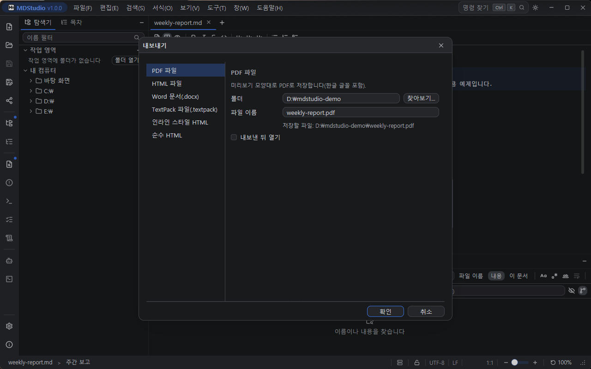

내보내기
문서를 PDF·HTML·Word 파일로 저장하거나, 서식 있는 HTML을 블로그 편집기에 붙여넣을 수 있습니다. 내보내기는 사본을 만들며 문서는 바뀌지 않습니다.
형식
파일 > 내보내기(Ctrl+E)를 클릭하면 「내보내기」 창이 열립니다. 왼쪽 목록에서 형식을 선택하면 오른쪽에 그 형식의 칸이 나옵니다.
| 형식 | 내용 |
|---|---|
| PDF 파일 | 미리보기 모양대로 저장합니다. 한글 글꼴이 들어갑니다 |
| HTML 파일 | 스타일과 그림을 담은 HTML 파일 하나입니다 |
| Word 문서(.docx) | Word나 Pandoc 없이 저장합니다 |
| TextPack 파일(.textpack) | 본문과 그림을 zip 파일 하나에 담은 사본입니다. 지금 문서는 그대로입니다 |
| Pandoc으로… | Pandoc으로 저장합니다. 아래 Pandoc 형식 절을 봅니다 |
| 인라인 스타일 HTML | 블로그 편집기에 붙여넣는 조각입니다. 복사합니다 |
| 순수 HTML | 스타일 태그를 가진 HTML 문서입니다. 복사합니다 |
PDF·HTML·Word·Pandoc은 명령 팔레트(Ctrl+K)에서도 실행할 수 있습니다. 「PDF로 내보내기」처럼 이름으로 찾으며, 그 명령은 창을 그 형식으로 열어 둡니다. 이 명령들은 메뉴 막대에는 없습니다.
파일로 내보내기
파일 형식은 저장 창 없이 정한 자리에 바로 씁니다.
- 파일 > 내보내기(Ctrl+E)를 클릭합니다.
- 왼쪽 목록에서 형식을 선택합니다. 이름 칸의 확장자가 그 형식의 것으로 바뀌고, 고친 이름은 그대로 남습니다.
- 「폴더」와 「파일 이름」을 확인합니다. 다른 폴더는 [찾아보기...] 버튼에서 선택합니다.
- 저장한 파일을 바로 열려면 「내보낸 뒤 열기」를 켭니다. 실행 파일은 열지 않습니다.
- [확인] 버튼을 클릭합니다. Enter 키로도 실행합니다.
이렇게 보입니다: 창이 닫히고 「저장했습니다: …」 알림에 저장한 경로가 나옵니다.
참고: 같은 이름의 파일이 있으면 「파일 덮어쓰기」 창이 먼저 묻습니다. 처음 선택은 「취소」입니다.
참고: 쓸 수 없는 이름(
\ / : * ? " < > |,CON같은 예약 이름)이면 칸 아래에 이유가 나오고 [확인] 버튼이 흐려집니다.
- 확장자를 적지 않으면 형식의 확장자가 붙습니다. Pandoc은 확장자로 형식을 정하므로 직접 적습니다.
- 기본 폴더는 문서가 저장된 폴더입니다. 저장하지 않은 문서는 마지막으로 내보낸 폴더를 씁니다.
- 마지막으로 고른 형식·폴더·「내보낸 뒤 열기」는 다음에도 그대로 남습니다.

붙여넣기 형식
인라인 스타일 HTML과 순수 HTML은 파일을 만들지 않고 클립보드에 복사합니다.
- 형식을 선택합니다. 오른쪽 미리보기에 결과가 나옵니다.
- [확인] 버튼을 클릭합니다. 창이 닫히고 「복사했습니다」 알림이 나옵니다.
- 블로그나 HTML 편집기에 붙여넣습니다.
- 인라인 스타일 HTML은 서식을 태그마다 style 속성에 넣습니다. 그림은 「그림 #N.」 자리 표시자로 바뀝니다.
- 순수 HTML은 스타일 태그를 가진 온전한 HTML 문서이며, 그림을 문서 안에 넣습니다.
- 미리보기는 긴 문서의 앞부분만 보여 줍니다(약 64KB 또는 600줄). 복사는 문서 전체를 대상으로 합니다.
Pandoc 형식
Pandoc을 쓰는 형식(ODT·EPUB 등)은 Pandoc 사용을 켜고 실행 파일을 찾을 수 있을 때만 목록에 나옵니다.
- 설정 > 시스템 > 외부 도구를 열고 「Pandoc 사용」을 켭니다.
- 「경로」 칸에 Pandoc 실행 파일을 적습니다. 칸을 비워 두면 자동으로 찾습니다.
- 파일 이름 칸에 확장자를 직접 적습니다(예:
.epub). 확장자가 형식을 정합니다.
- Pandoc이 2분 안에 끝나지 않으면 실패로 알립니다.
- Pandoc 2.15 이상이 필요합니다. 더 오래된 Pandoc은 쓸 수 없습니다.